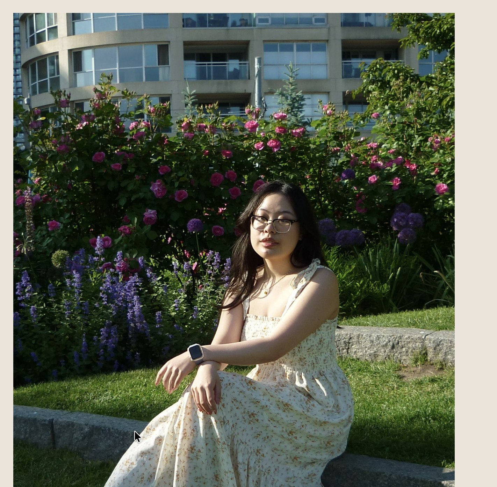

Hi, I'm Joyce. I'm a Global Business and Digital Arts student at the University of Waterloo. Passionate about blending art, design, and storytelling to create experiences that connect people. I specialize in visual design, photography, UX/UI, and creative storytelling.
I am from Canada, where I was born and raised, though I traveled a lot with my family when I was younger — memories of those trips are mostly a blur. Growing up, art has always been at the heart of my life; I started drawing at six and have been playing the piano, dancing, and singing for as long as I can remember. Being the youngest of three siblings, I've always had the guidance and care of my older brother and sister, which has shaped the person I am today. Art, travels, family, and creativity have been the constants in my world.
My goal is to become an entrepreneur, running my own business that combines my passions for both business and the arts. Alongside that, I hope to take on side projects in graphic design, product design, and photography, which will allow me to explore my creativity while traveling the world and experiencing life from different perspectives. I also aim to deepen my skills in prototyping, improve my understanding of users, and continue growing as a designer, knowing that design is always evolving.

I believe design is about connection — between people, ideas, and emotion. My process always begins with curiosity and empathy: understanding how users think and feel, then crafting something that tells a story through visuals, interactivity, and thoughtful details.
My good design is...
My Story
where I developed a foundation in composition, colour, and storytelling. Today, I design websites, create tangible products, capture meaningful moments through photography, and produce digital art. I believe progression, not perfection drives creativity, and that good design should be clear, aesthetically purposeful, user-centered, consistent, sustainable, and innovative.
I combine my skills with curiosity and empathy to create work that is both emotionally engaging and strategically meaningful, whether through digital interfaces, physical products, or visual storytelling.
If I had to describe a style that embodies me, it would be a blend of fancy and classy, minimal and maximal, clean, elegant, and soft. It's my go-to aesthetic — whether I'm designing, dressing, or creating — because it's versatile, adaptable, and rooted in an appreciation for many different looks.
As an artist, I never limit myself to a single style. I'm inspired by variety: simple and complex compositions, cottagecore influences, soft pastels, Y2K vibes, clean minimal layouts, refined and elegant designs, and Asian-inspired visual elements.
Overall, my work ranges from minimal and elegant to playful and experimental, shaped by cottagecore, Y2K, and Asian-inspired aesthetics. I stay adaptable and curious, always exploring new mediums and creative approaches.
Learning about design, using AI to incorporate into my designs, prototyping products for users, and understanding web design.
I love to eat and travel. I've been to parts of Europe (Italy, Spain, France), parts of Asia (Japan, Taiwan, Hong Kong, China, Thailand), and the USA.
I love capturing small moments — either my own life or the people around me.